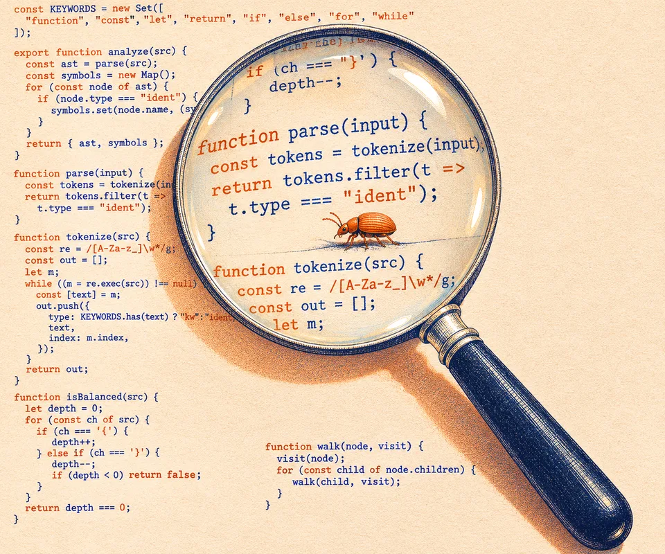

Same question. Different source.
In one retrieval test, changing the source document changed the model’s answer. I documented the result alongside a test where the suspected behavior didn’t reproduce.
Read the test evidence![MC monogram]()
At 15, I wanted to understand how computers worked. In data centers, that question became more specific: when a service goes down, which part actually failed?
Today I build software and test what it trusts. I’m bringing that experience into ESNEXUS, starting with how engineers review cloud changes.

In one retrieval test, changing the source document changed the model’s answer. I documented the result alongside a test where the suspected behavior didn’t reproduce.
Read the test evidenceI’m building toward a tool that helps platform engineers see which services a proposed cloud change could affect before they approve it.
Explore TwinCuriosity became a way of thinking. Building gave it a direction.
At 15, I was curious about technology and the systems behind it. I wanted to understand how things worked. That curiosity is still the starting point for what I do today.
Look closer. Ask another question.
That interest grew into a drive to build. Software gave me a way to turn an idea into something tangible, work through the details, and learn from what happened.
An idea becomes real when you start making it.
My experience in data center environments brought me closer to the infrastructure behind software. Dependencies, diagnostics, and operational constraints gave those early questions real-world context.
Explore my experienceBuilding a system also means understanding how someone could misuse it. I bring that perspective to applications and AI systems through threat modeling, testing, and better security controls.
See the SecureRAG case studyAs a product security engineer and founder, I’m bringing those questions together. ESNEXUS is where I’m exploring useful products with security considered from the beginning.
The curiosity stayed. The ambition grew.
Explore my projectsCan two customers use the same API while keeping their documents private?
Network security · PlannedWhich services actually need to reach the database?
AI security · In progressHow much does a retrieved document change an assistant’s answer?
Cloud security · PlannedCan a release pipeline deploy one service without gaining access to its neighbors?
Infrastructure roots
My data center work across AWS, Google, and Microsoft environments shaped how I approach dependencies, troubleshooting, and dependable operations.
Read my experience and rolesFor investors, founders & curious people
Have a difficult problem, a product idea, or a question about ESNEXUS? I’d like to hear it.
muneebchaudhry2000@gmail.com